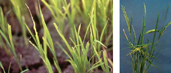
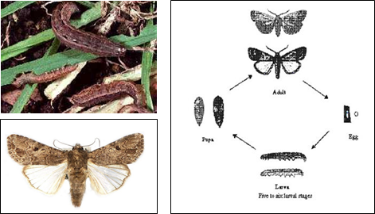

PESTS OF RICE (BORERS AND FOLIAGE FEEDERS) :: Major Pests :: Swarming Caterpiller
3. Swarming caterpillar: Spodoptera mauritia (Noctuidae: Lepidoptera)
Host range: Rice, maize, jowar, wheat, barley and sugarcane
Distribution and status:India, South East Asia, USA, Australia, Africa
Damage symptoms: This is a sporadic pest but causes very serious damage to young crops when it appears in large numbers. The caterpillars feed at night and hide during the day.
 |
Larvae cut the seedlings in large scale and appears as if grazed by cattle by its nocturnal feeding. Peduncles of ears are bitten through in maturing crop. They feed gregariously and march from field to field. The damage is severe in July - September. It breeds on a variety of grasses. Yield loss ranges from 10-20%. |
| Damaged leaf blades and Panicles cut off from the base (IRRI) |
Paddy Swarming caterpillar (Armyworm) - Video
 |
Bionomics: Adult moth is medium sized stoutly built, dark brown with a conspicuous triangular spot on fore wings. Eggs are laid in masses on leaves and covered with grey hairs. The egg period is 7 days. Caterpillar is cylindrical, dark to pale green with lateral lines along the body. The larval period is 20-25 days. It pupates in an earthern cocoon in soil for 10-15 days. |
Management
- Conserve larval parasitoids viz., Apanteles ruficrus, Meteorus sp., Charops bicolor, C. dominans, Drino unisetosa, Pseudoperichaeta orientalis, Strobliomyia aegyptia, Pseudogonia cinerascens, Tachinia analis, Cuphocera varia, Sturmia inconspicua, Chelonus sp., Euplectrus euplexiae, E. spodopterae anda parasitic nematode (Hexamermis sp.)
- Conserve pupal parasitoids viz., Netelia sp., Actias sp., Drino sp. and Isomera cinerascens
- Protect vertebrate predators of the larvae viz., House Crow Corvus splendens, Jungle Crow C. macrorhynchos, CattleEgret Bubulcus coromandus, Indian pond heronorPaddy bird Ardeola grayi, white breasted water hen Amaurovius phoenicocurus, Indian Myna Acridotheres tristis.
- Flood the nursery to expose the hiding larvae to the surface for birds to pick them up.
- Kerosenate water during irrigation to suffocate and kill the larvae.
- Allow ducks into the field to feed on the larvae.
- Drain water from nursery and spray chlorpyriphos 20 EC 80 ml (or) endosulfan 35 EC 80 ml during late evening.